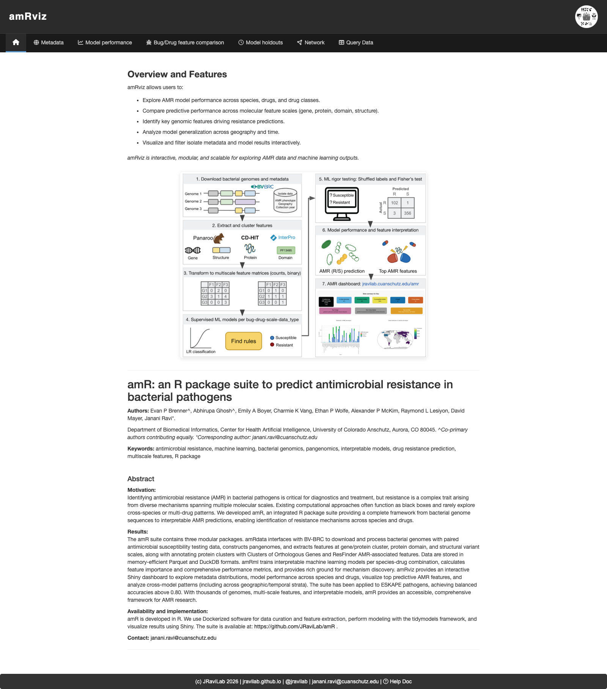
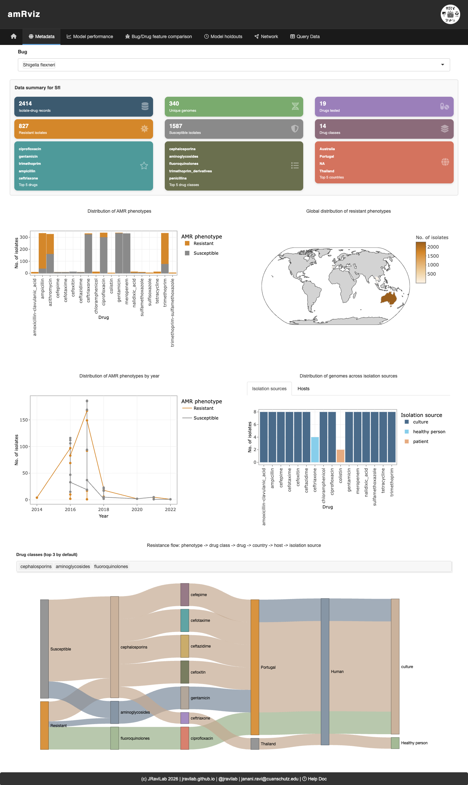
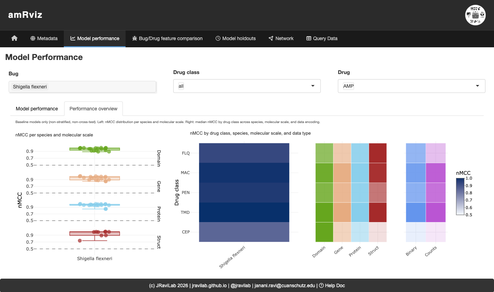
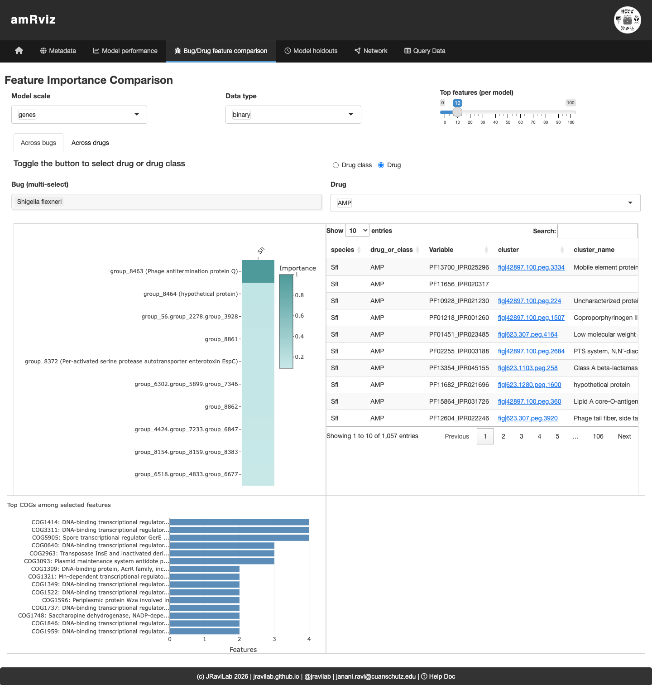
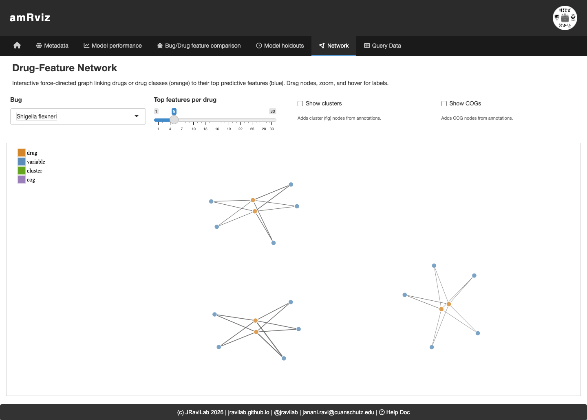

amRviz is an interactive Shiny dashboard for exploring antimicrobial resistance (AMR) data and machine-learning model results. It is the visualization layer of the amR suite:
| Package | Role |
|---|---|
| amRdata | Downloads bacterial genomes and antimicrobial susceptibility data from BV-BRC, builds pangenomes, and extracts multi-scale features (genes, proteins, domains, structures). |
| amRml | Trains interpretable ML models per species–drug combination and computes feature importance and performance metrics. |
| amRviz | Provides the interactive dashboard that visualizes the metadata and model outputs produced by the first two packages. |
amRviz lets researchers compare results across species, drugs and drug classes, molecular feature scales, and biologically relevant strata (e.g. country, year), all without writing code. This vignette walks through the data it consumes, how to launch it, and a guided tour of the dashboard’s tabs.
Install the package and launch the app with a single call:
if (!requireNamespace("BiocManager", quietly = TRUE)) {
install.packages("BiocManager")
}
BiocManager::install("amRviz")
library(amRviz)
launchAMRDashboard()launchAMRDashboard() returns a Shiny application object
and opens the dashboard in your default browser. With no arguments it
loads the bundled demo data for Shigella flexneri, so you can
explore every tab immediately.
To explore your own results, point the app at an amRml output directory:
launchAMRDashboard(results_root = "/path/to/your/amRml/results")The species dropdowns populate automatically from whichever data is loaded. There are no hardcoded species lists.
amRviz reads the Parquet files written by amRml,
organized into one subdirectory per species. The subdirectory name
(e.g. Shigella_flexneri) becomes the display label
throughout the dashboard, while a short species code
(e.g. Sfl) inside each file is used for internal
filtering.
results/
└── Shigella_flexneri/
├── Sfl_ML_perf.parquet # baseline model performance
├── Sfl_country_ML_perf.parquet # country-stratified models
├── Sfl_year_ML_perf.parquet # year-stratified models
├── Sfl_cross_ML_perf.parquet # cross-tested models
├── Sfl_ML_top_features.parquet # top predictive features
├── Sfl_country_ML_top_features.parquet
├── Sfl_year_ML_top_features.parquet
├── Sfl_metadata.parquet # isolate surveillance metadata
└── cluster_feature_COG.parquet # optional COG/annotation lookupThree file types drive the dashboard:
Performance metrics (*_ML_perf.parquet)
has one row per model. Key columns:
| Column | Description |
|---|---|
species |
Species code (e.g. Sfl) |
drug_or_class |
Drug or drug-class abbreviation |
drug_label |
drug or drug_class
|
feature_type |
Molecular scale: genes, proteins,
domains, struct
|
feature_subtype |
Data encoding: binary or counts
|
strat_label |
Stratification: blank (baseline), country, or
year
|
strat_value / strat_value_test
|
Trained-on / tested-on stratum |
nmcc, bal_acc, f1,
sens, spec
|
Performance metrics |
Top features
(*_ML_top_features.parquet), ranked predictive features per
model, with Variable (feature ID), Importance
(score), and Sign (direction of effect).
Metadata (*_metadata.parquet) contains
one row per genome–drug test, with
genome_drug.resistant_phenotype (Resistant/Susceptible),
genome.isolation_country,
genome.collection_year,
genome.host_common_name,
genome.isolation_source, and drug_class.
If an annotation root (
amRdata) is available, amRviz also links features to Clusters of Orthologous Genes (COGs) and ResFinder AMR genes. Pass it vialaunchAMRDashboard(amrdata_root = "~/amRdata/data"); otherwise annotation-based columns and network nodes are simply omitted.
The dashboard is organized into a top navigation bar. Each tab is a different view of the same loaded data; filters at the top of each tab update its plots in place. Common filters include Bug/Species, Drug or Drug class, Model scale (genes / proteins / domains / structures), and Data type (binary / counts).
The landing page summarizes what amRviz does, shows the amR suite workflow, and includes the project abstract and citation.

Explore AMR surveillance metadata for a selected species. Summary cards give quick counts (genomes, drugs, drug classes, resistant vs. susceptible tests), and the plots below break resistance down by drug, geography, year, host, and isolation source. The Sankey diagram at the bottom traces the flow from phenotype → drug class → drug → country → host → isolation source, making it easy to see where resistant isolates concentrate.

Compare model performance across drugs and molecular scales. Pick a bug, drug class, and drug; the Model performance sub-tab shows per-model metric distributions, while the Performance overview sub-tab (below) gives a bird’s-eye summary of baseline models: a strip plot of nMCC by molecular scale (left) and heatmaps of median nMCC by drug class across scale and data encoding (right). Here, domain- and gene-scale models reach the highest nMCC for most drug classes.

Investigate the genomic features driving predictions. The Across bugs sub-tab compares ranked features for a given drug or class across selected species; the Across drugs sub-tab compares top features across drugs within one species. The importance plot, annotated feature table (with COG and NCBI HMM links), COG-category barplot, and ego network let you see which features are shared and what they encode.

Assess how models generalize across geography and time. For a chosen bug and drug, the Accuracy distributions and Model performance sub-tabs compare country-holdout vs. year-interval models side by side, and Top features reveals which predictors are shared or exclusive across strata.
An interactive force-directed graph links drugs or drug classes (orange) to their top predictive features (blue), with optional cluster and COG nodes. Drag nodes, zoom, and hover for labels to explore how features are shared across drugs. Features that connect to multiple drugs are candidate broad-spectrum resistance determinants.

sessionInfo()
#> R version 4.6.0 (2026-04-24)
#> Platform: x86_64-pc-linux-gnu
#> Running under: Ubuntu 24.04.4 LTS
#>
#> Matrix products: default
#> BLAS: /usr/lib/x86_64-linux-gnu/openblas-pthread/libblas.so.3
#> LAPACK: /usr/lib/x86_64-linux-gnu/openblas-pthread/libopenblasp-r0.3.26.so; LAPACK version 3.12.0
#>
#> locale:
#> [1] LC_CTYPE=C.UTF-8 LC_NUMERIC=C LC_TIME=C.UTF-8
#> [4] LC_COLLATE=C.UTF-8 LC_MONETARY=C.UTF-8 LC_MESSAGES=C.UTF-8
#> [7] LC_PAPER=C.UTF-8 LC_NAME=C LC_ADDRESS=C
#> [10] LC_TELEPHONE=C LC_MEASUREMENT=C.UTF-8 LC_IDENTIFICATION=C
#>
#> time zone: UTC
#> tzcode source: system (glibc)
#>
#> attached base packages:
#> [1] stats graphics grDevices utils datasets methods base
#>
#> other attached packages:
#> [1] BiocStyle_2.40.0
#>
#> loaded via a namespace (and not attached):
#> [1] digest_0.6.39 desc_1.4.3 R6_2.6.1
#> [4] bookdown_0.46 fastmap_1.2.0 xfun_0.58
#> [7] cachem_1.1.0 knitr_1.51 htmltools_0.5.9
#> [10] rmarkdown_2.31 lifecycle_1.0.5 cli_3.6.6
#> [13] sass_0.4.10 pkgdown_2.2.0 textshaping_1.0.5
#> [16] jquerylib_0.1.4 systemfonts_1.3.2 compiler_4.6.0
#> [19] tools_4.6.0 ragg_1.5.2 bslib_0.11.0
#> [22] evaluate_1.0.5 yaml_2.3.12 BiocManager_1.30.27
#> [25] otel_0.2.0 jsonlite_2.0.0 rlang_1.2.0
#> [28] fs_2.1.0 htmlwidgets_1.6.4